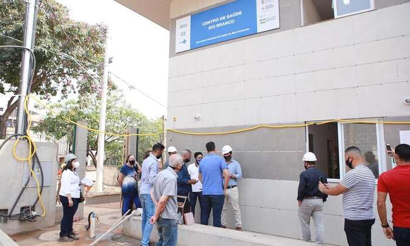

Fiscalização
Vereadores fiscalizam obras e condições de Unidades de Saúde de BH
As visitas de fiscalização começaram na terça (14/9), na região de Venda Nova, em BH, e terão sequência na quarta, na Pampulha Leia mais
14/09/2021 11:15
Fiscalização
As visitas de fiscalização começaram na terça (14/9), na região de Venda Nova, em BH, e terão sequência na quarta, na Pampulha Leia mais
14/09/2021 11:15
Em apenas sete dias, 60 pessoas morreram em unidades do tipo na capital, enquanto, normalmente, média é de apenas dez perdas por semana, diz sindicato Leia mais
01/04/21 - 18h19

A Associação dos moradores do bairro Santa Terezinha e Região, visando proporcionar mais alegria e diversão para as crianças do bairro e do Confisco, está arrecadando: Milho de Pipoca, óleo e pacote de açúcar cristal (algodão doce). Leia mais

Temos em nosso bairro a paroquia santa terezinha com missas semanais. Leia Mais
Para quem é evangelico, temos também a "Igreja Batista Itatiaia" que fica localizada na "Rua Casablanca nº 460. Leia mais.